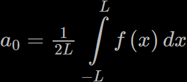

In simple terms, the Fourier Series is a mathematical technique that involves
combining different waves to create any type of continuous function.
This method was originally developed by Jean Baptiste Joseph Fourier in
1807 as a tool to solve differential equations related to heat conduction.
By representing complex functions as a sum of simpler waves, the Fourier
Series provides a powerful method for analyzing and manipulating various
signals in fields such as mathematics, physics, nd engineering.
 The symbol that resembles a weird "E" is a Riemann sum, which you can interpret as a loop.
The upper and lower limits of the loop denote the starting and ending values of the index
variable "n," which starts at 1. Think of the "E" as an update that occurs within each
iteration of the loop. The upper limit of the loop is infinity, which serves as the stopping
condition.
The symbol that resembles a weird "E" is a Riemann sum, which you can interpret as a loop.
The upper and lower limits of the loop denote the starting and ending values of the index
variable "n," which starts at 1. Think of the "E" as an update that occurs within each
iteration of the loop. The upper limit of the loop is infinity, which serves as the stopping
condition.
It is also important to note that "L" represents the length of the function being recreated.
A0, An, and Bn are simply terms that mathematicians use to simplify equations for easier
notation. Think of them as methods. The equations for each method will be shown below.

The first simplification in the Fourier Series equation involves the constant term, which
is denoted by "a0." To better understand this, consider the equation y = mx + c. Here, "a0"
corresponds to the constant term "c," which determines the vertical shift of the function.
The value of "a0" is dependent on the average value of the function over the period length
that you select, which can either shift the function up or down.
The second simplification of the Fourier Series equation is closely related to the third
simplification, so I'll be explaing both of them at the same time. To better understand
this, consider the analogy of mixing paint. In this case, the cosine wave can be thought
of as black paint, while the sine wave is white paint. Every possible function can be
represented as a shade of gray, and by combining sine and cosine waves, you can create
any shade of gray.
It's important to note that certain functions will have a stronger resemblance to cosine
waves than sine waves, and vice versa. The second, and third simplification is about
breaking down the function into its individual components of sine and cosine waves, which
allows you to accurately represent it as a combination of different shades of gray.